01
Project
The Anatomy Of
Purpose
Explain the inner workings of everyday electronics using CT scans, 3D models, and 2D graphics
My role
Sole 3D Artist and Motion Designer
Scope
3 episodes with up to 5 minutes of animation per episode, completed in under a month each.
Result
An exclusive series streaming on Nebula, The Anatomy Of.
Process
Storyboards
The writer provided storyboards with an explanation of each animation, and it was my job to turn these highly technical concepts into visually simple and beautiful animations.
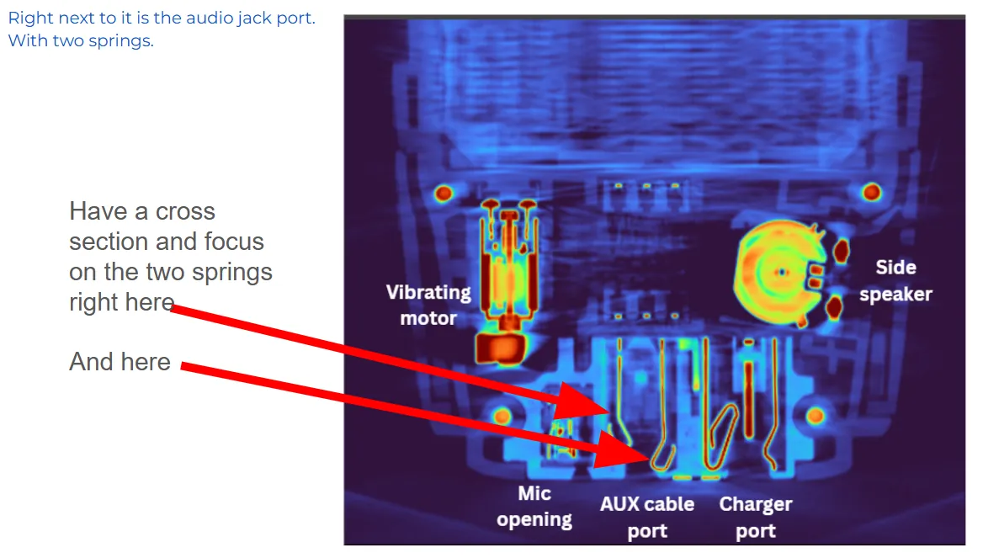
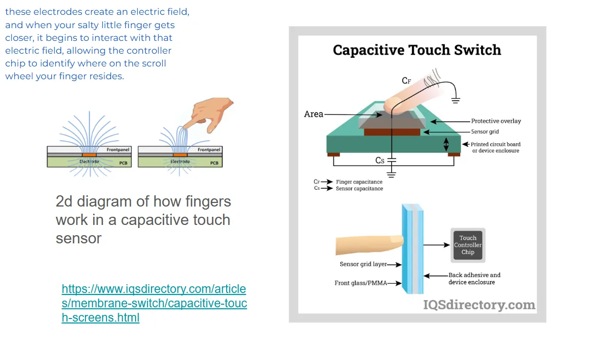
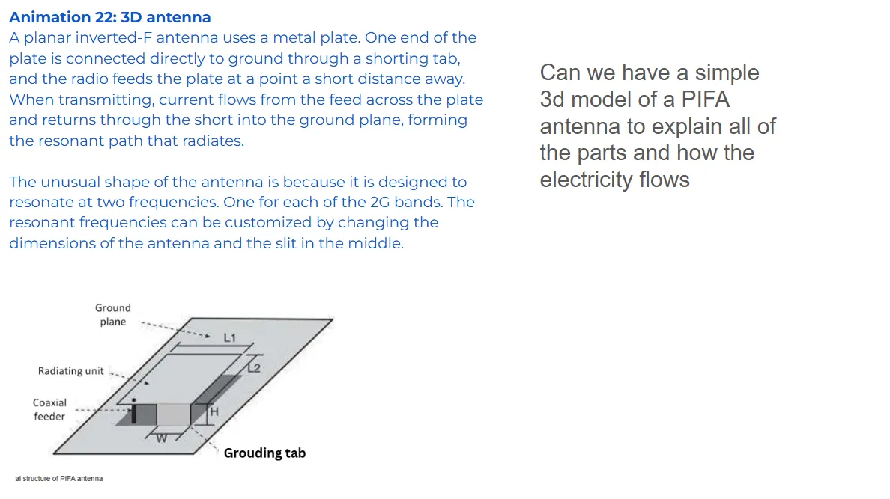
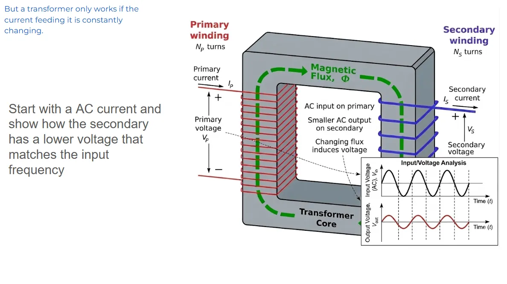
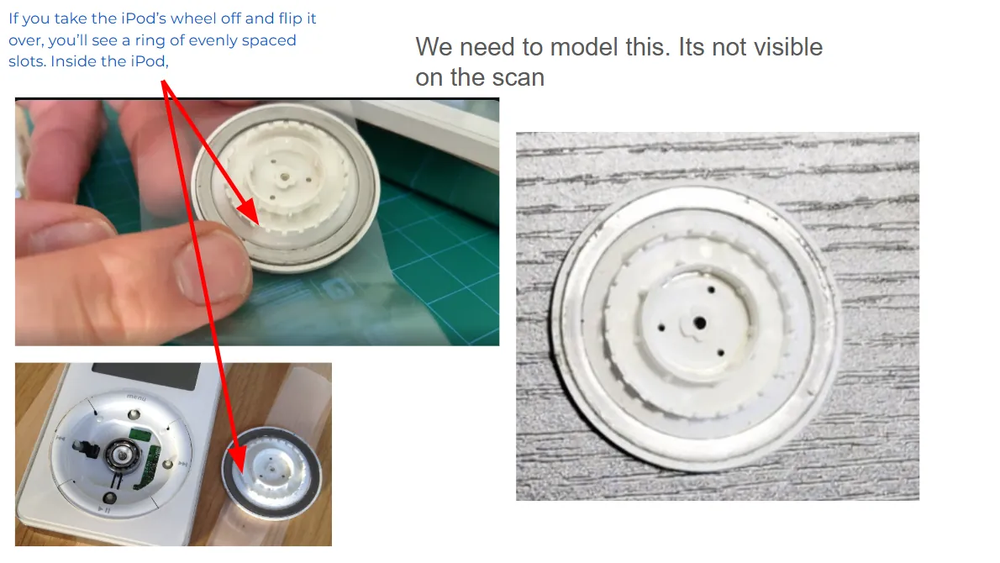
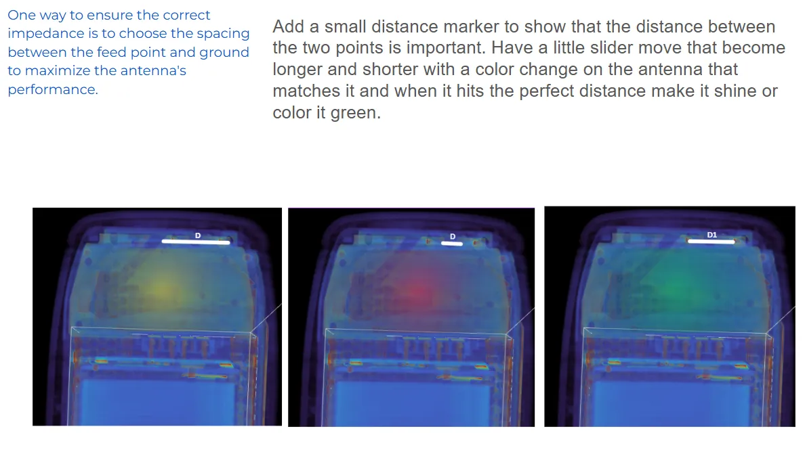
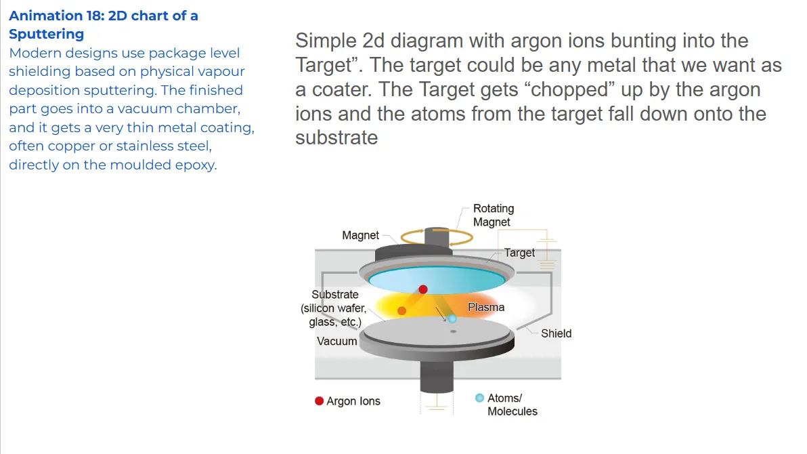
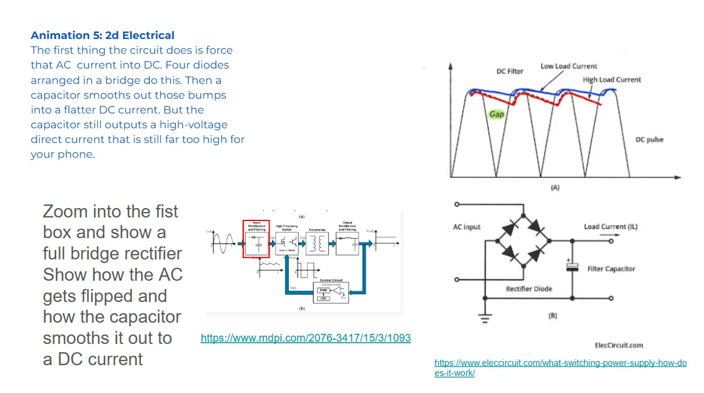
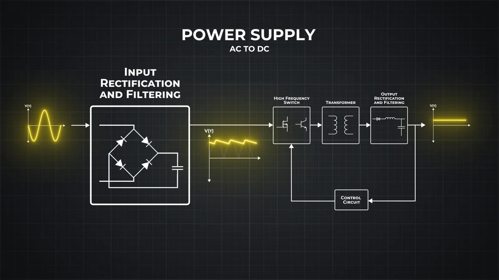
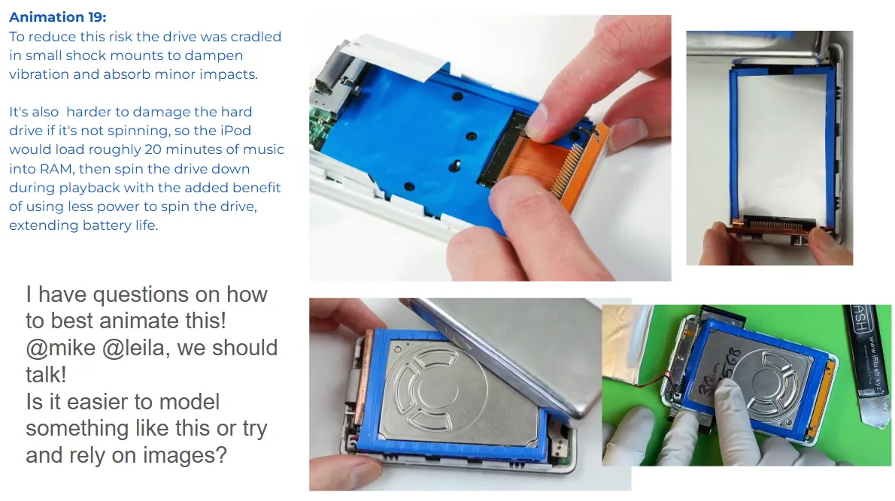
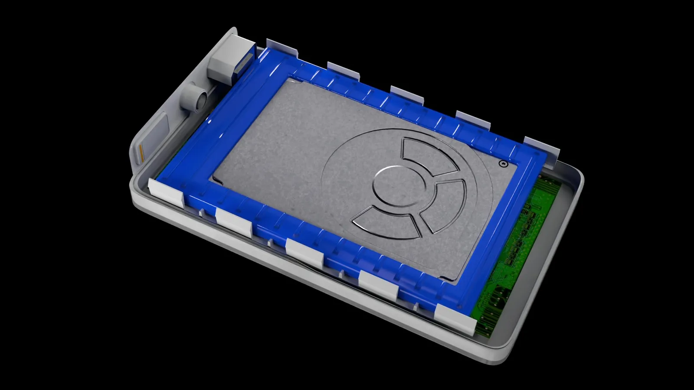
Technique
CT Scan Shader
These scans are large volumetric datasets, or .vdbs. I used a custom density-based shader to achieve the "rainbow" effect.
Blender has virtually no tools for editing .vdbs, so I invented a shader-based cropping tool to isolate parts of the scans.
02
Custom Models
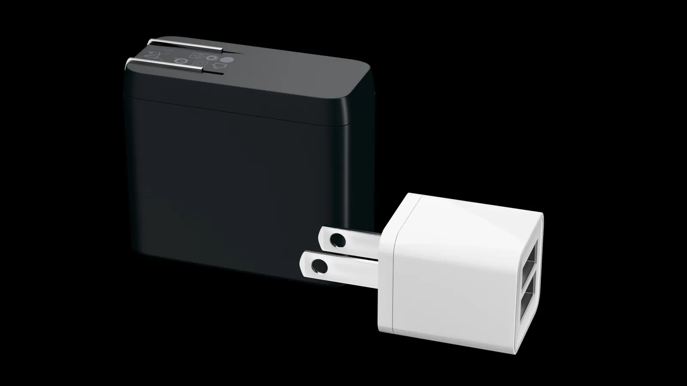
03
Environments
04
iPod Menu
05
Papers
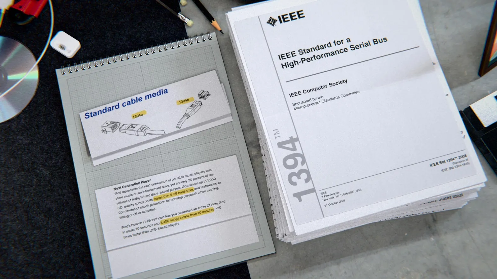
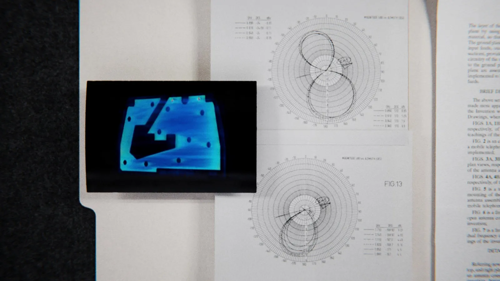
06